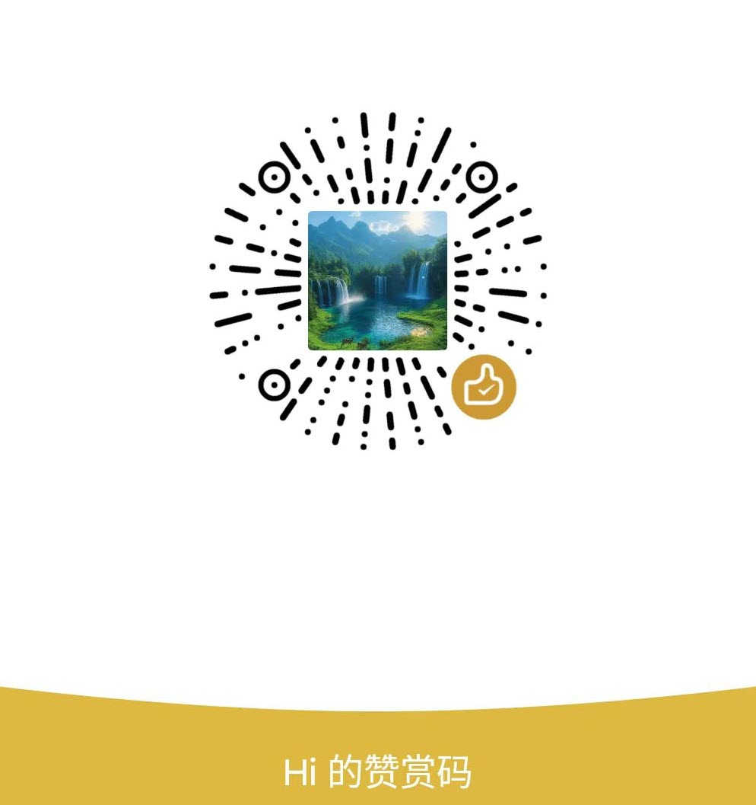

Content Console
每日内容
后台监听中
AI 查询 NextVault
直接查询 NextVault，先列命中项，再给结论。
日期标签
已选中
0
已选中
0
常用
0
Asset Vault
资源库
0
统一管理备份文件和快捷入口，长期保存或快速访问。
资源类型
📦
备份存储
拖入文件或文件夹，复制到软件目录永久保存
🔗
快捷存储
拖入文件或文件夹，仅保存路径快速访问
浏览器 Cookie 卡片
0
管理和导入浏览器 Cookie，实现多账号快速切换和登录状态保存。
已选中
0
行为设置
系统级
复制后智能判断（文本）
默认不打开
观察窗口内连按两次复制
连按两次系统复制
复制后再按快捷键收藏
删除上次收藏
开始累计
结束累计
撤销上一段
图标透明度
100%
自定义图标
临时便利贴（剪贴板）
临时便利贴数据
路径配置
自建浏览器工作目录
资源备份存储路径
截图翻译 API 配置
翻译模式
自定义翻译 URL
自定义翻译 Method
自定义翻译 Headers(JSON)
OCR API Key
OCR 语言
保存后重新注册全局快捷键；若与系统或其它软件冲突可能无法注册。开机启动通常需下次登录系统后验证。备份路径修改后，新导入的资源将保存到新路径。
关于 DeskLibrary
桌面收藏工作台
DeskLibrary 是一款 Windows 桌面端工作台应用：剪贴板与快捷键捕捉文本/图片、资源库备份或快捷入口、浏览器 Cookie 卡片与远程调试导入等，帮助把碎片信息集中在一处检索与复用。
开源
源码托管于 GitHub，欢迎查阅与提交 Issue。
https://github.com/yourusername/DeskLibrary
联系与赞赏

反馈与开发建议
提交后将通过邮件发送给开发者（请勿在公共网络下提交敏感密码）。